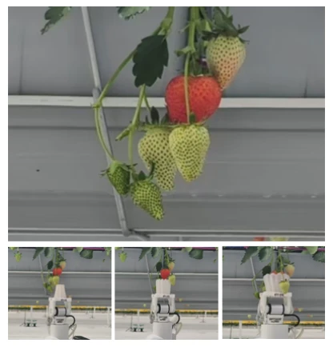
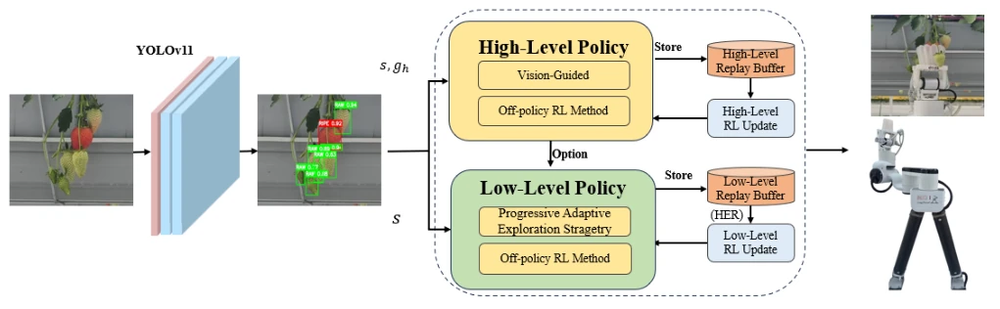
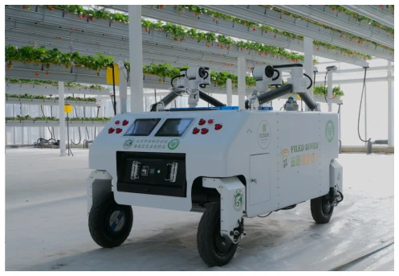
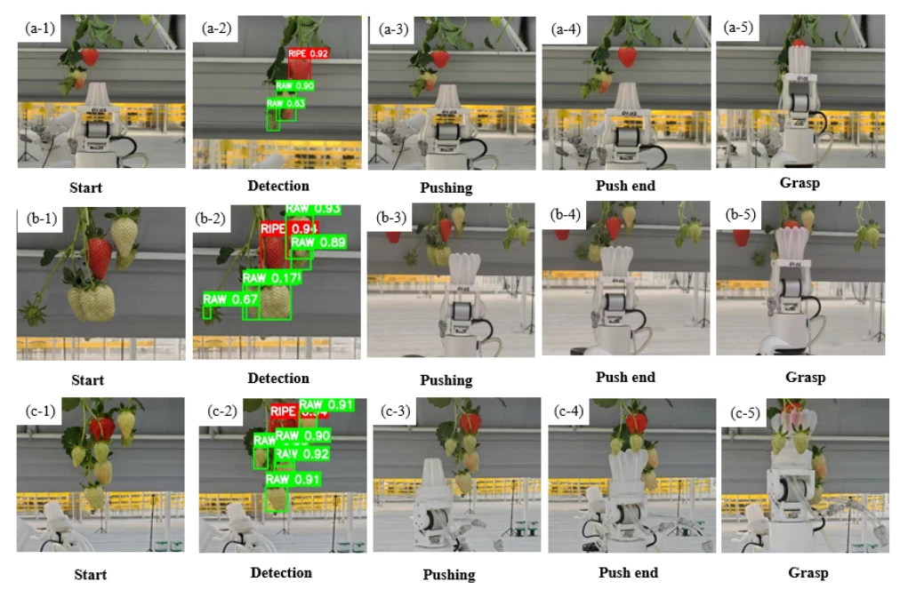

This paper equips strawberry picking with a "layered brain", attempting to use Hierarchical RL to solve the "ripe fruit surrounded by unripe fruit" dilemma. The VGPA framework decouples "push" and "grasp", where the high-level assesses the situation and the low-level executes tasks, offering a clear logic. However, do not celebrate too soon; the 96.7% success rate in simulation drops directly to 71.7% in reality, indicating that strawberries in the simulator are still too "hard" and fail to simulate the soft deformation of real fruit. Compared with VLM [23], although faster, the success rate is lower, representing an "efficiency first, accuracy compromise". This method still tends to "smuggle private goods" (grabbing obstacles along with the fruit) under dense occlusion; future work relies on more realistic physics engines to rescue the situation, otherwise, in the fields, it may turn into "picking strawberries becomes picking mud".
Strawberry picking is challenging due to "clustering" and "occlusion". Existing obstacle avoidance methods [3], [4] are acceptable when space is ample, but once ripe fruit is tightly surrounded by unripe fruit, passive avoidance fails due to lack of space for detours. Active separation [5], [6] can push obstacles aside, but the coordination between pushing and grasping is a long-sequence decision problem, prone to learning collapse. Although HRL is suitable [7], [8], the high-level policy is difficult to converge and low-level training is unstable. The motivation of this paper is to enable the robot to learn to "clear the battlefield" before "harvesting precisely" under severe occlusion, addressing the unreliability of direct grasping and achieving selective picking.

Fig. 1. Top: A target strawberry cluster in the initial observation, where the target strawberry is surrounded by obstacles. Bottom (left to right): The robot learns to push away the obstacles and finally grasp the target.
The core is the VGPA framework. In terms of data flow, RGB-D is localized via YOLOv11; the high-level policy selects "separate" or "grasp" options (Option) based on occlusion status, while the low-level policy executes continuous actions. Innovation 1: Vision-Guided module, which uses visual supervision for high-level options during early training and gradually releases supervision later to accelerate convergence. Innovation 2: PAES policy, where low-level exploration is not fixed; it dynamically adjusts the ratio of random exploration, guided policy, and current policy based on stage success rates to prevent low-level fluctuations from affecting the high-level. Innovation 3: HER improves sample efficiency. The high-level uses DIOL, and the low-level uses DDPG, forming a closed loop. The PAES formula utilizes smoothed success rate to adjust noise and guidance probability. Specifically, PAES divides action sampling into three types: uniform random sampling for global exploration, a guided policy based on mastered stages for entering effective state regions, and current policy plus noise for local fine-tuning. This adaptive mechanism avoids the problem of asynchronous training between high and low levels in traditional hierarchical RL, making the low-level more stable prior to high-level decision-making.

Fig. 2. Overall architecture of the proposed VGPA framework. The RGB-D observation was first processed by YOLOv11 to detect and localize the target strawberry and surrounding obstacles. Based on the perceived occlusion state, the high-level policy selected an option (obstacle separation or grasping) with the assistance of the vision-guided module. The low-level policy then generated continuous control actions using PAES and DDPG, while HER improved sample efficiency through goal relabeling. The resulting actions were executed by the robot to perform obstacle separation and target grasping, and the interaction data were stored for hierarchical policy training.
Tested on PyBullet simulation and a real robot arm (LingXtend). Baselines include HAC, direct grasping, and VLM [23]. Metrics include success rate and time consumption. In simulation, VGPA high-level success rate is 96.7%, far exceeding HAC's 7.77%. In real-world testing, under slight occlusion it reaches 88.3%, superior to direct grasping's 75.7%. Ablation experiments demonstrate that both VG and PAES modules are effective. Compared with VLM [23], VGPA takes 4.15s, faster than VLM's 7.23s, but the success rate is slightly lower. Failure cases are mostly caused by fruit deformation or occlusion being too dense leading to mis-grasping. Three levels of occlusion were tested, proving robustness.

Fig. 4. Field test of the strawberry harvesting robot (HarvestFlex) in a greenhouse environment (Beijing Cuihu Agriculture Technology Co., Ltd.).

Fig. 7. Real-world harvesting examples under different occlusion conditions. Rows (a), (b), and (c) correspond to slight, moderate, and dense occlusion scenarios, respectively. From left to right, columns (1)–(5) illustrate the initial scene, target detection, obstacle pushing, push completion, and final grasping.